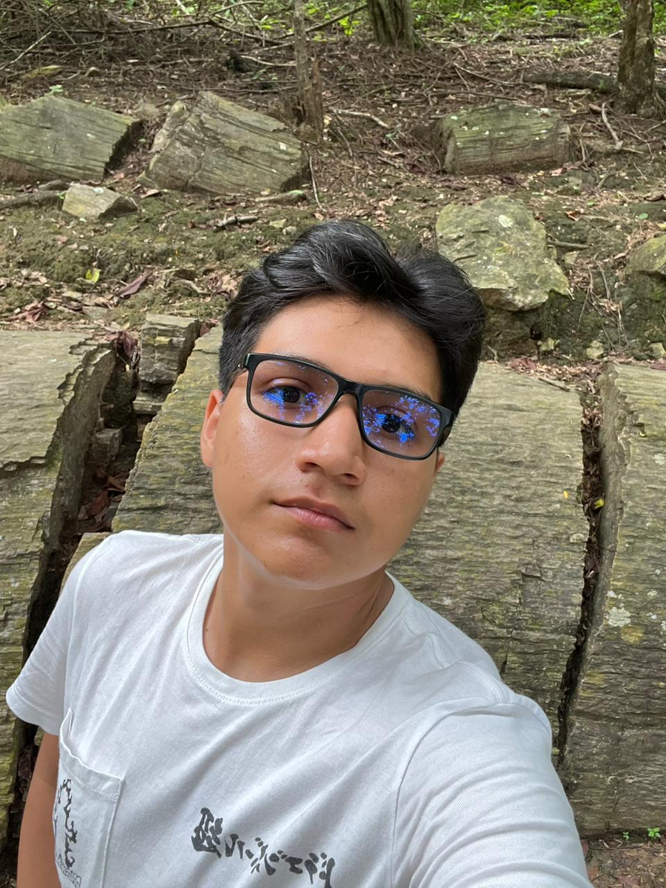
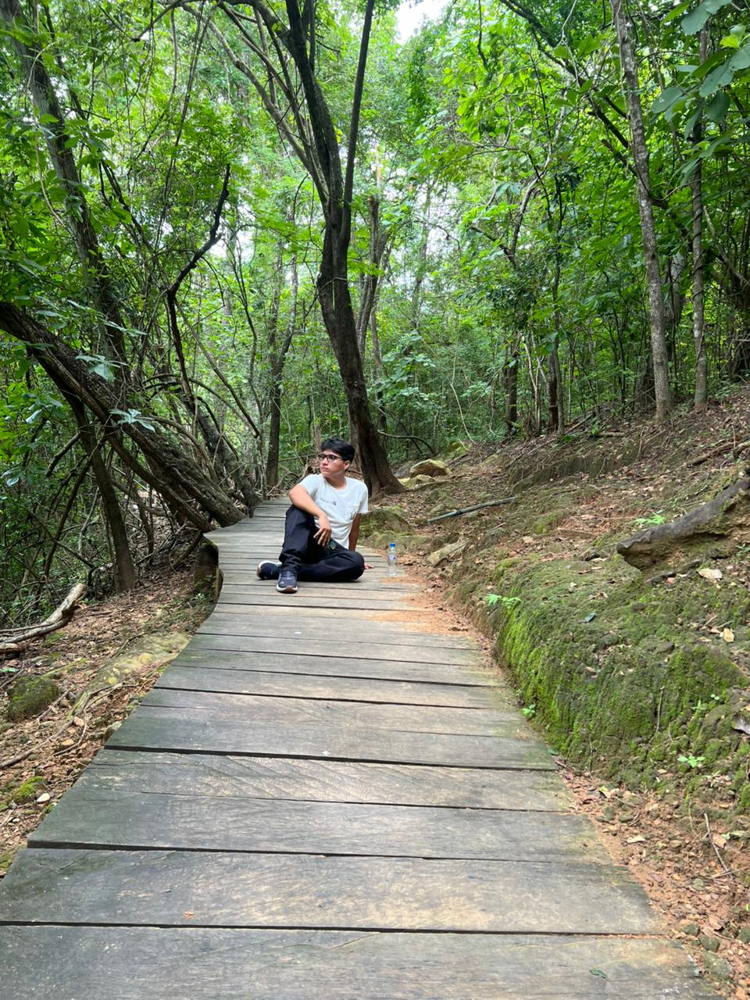

Universidad de las Fuerzas Armadas ESPE
Estudio en la carrera de Programación Web, con foco en estructura de páginas, maquetación y buenas prácticas.

Soy estudiante de Programación Web con interés en diseño de sitios, organización de información y buenas prácticas en HTML.

Me apasiona el desarrollo web y busco construir sitios bien estructurados, accesibles y visualmente claros. Tengo habilidades en HTML, organización de contenido y trabajo en equipo.
Estudio en la carrera de Programación Web, con foco en estructura de páginas, maquetación y buenas prácticas.
Mi horario de clases muestra la organización de materias por día y hora. Consulta la página de horario para ver todos los detalles.

Este sitio también incluye recursos multimedia para mostrar habilidades en la integración de medios.
El formulario en la página de búsqueda muestra cómo se envían datos con el método GET en HTML.